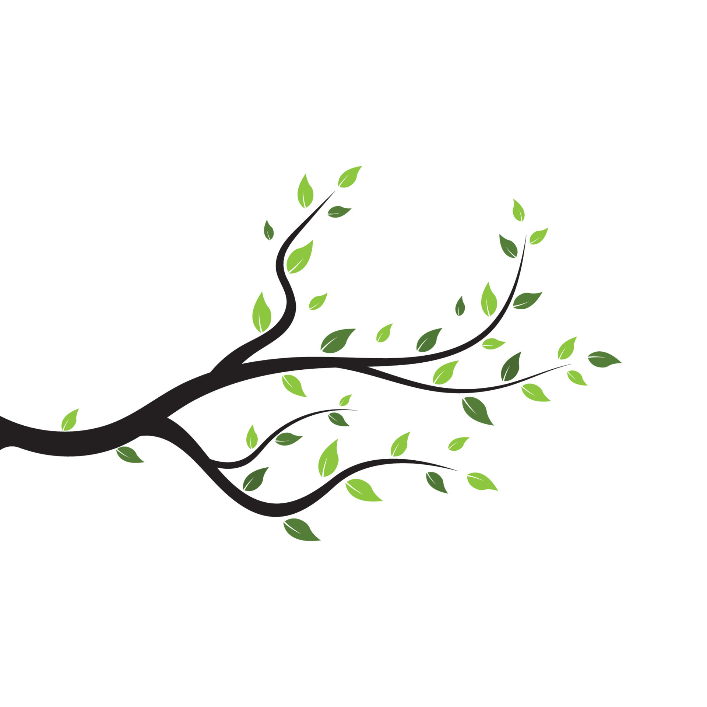
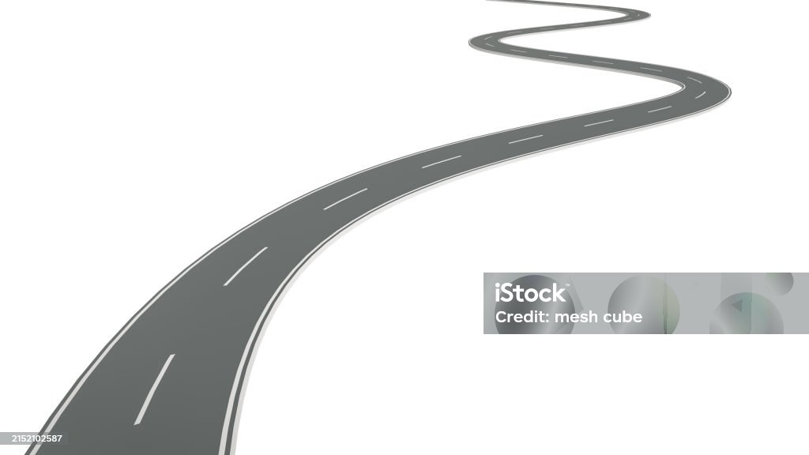
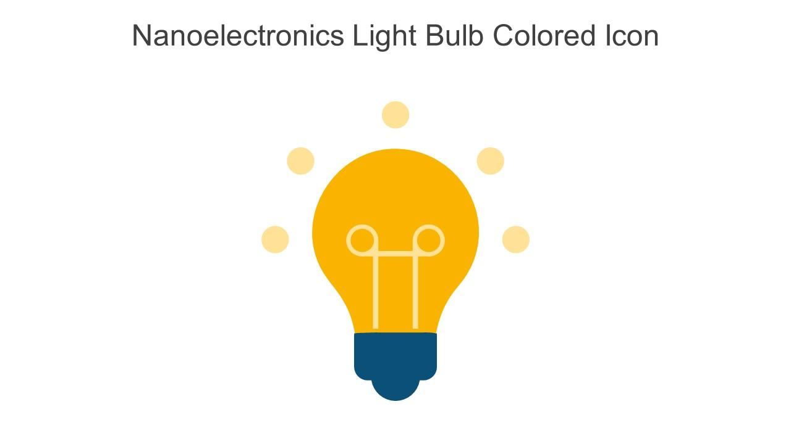
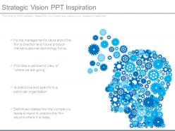
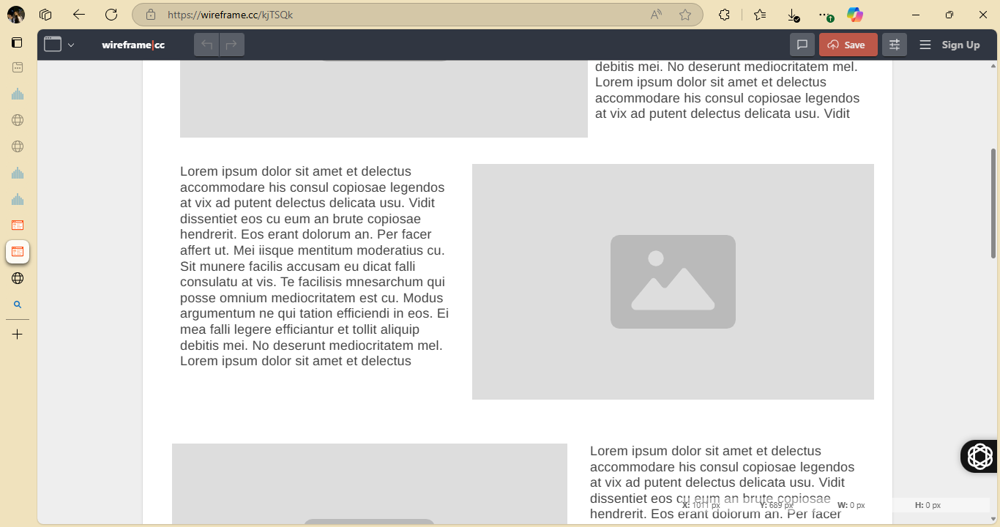
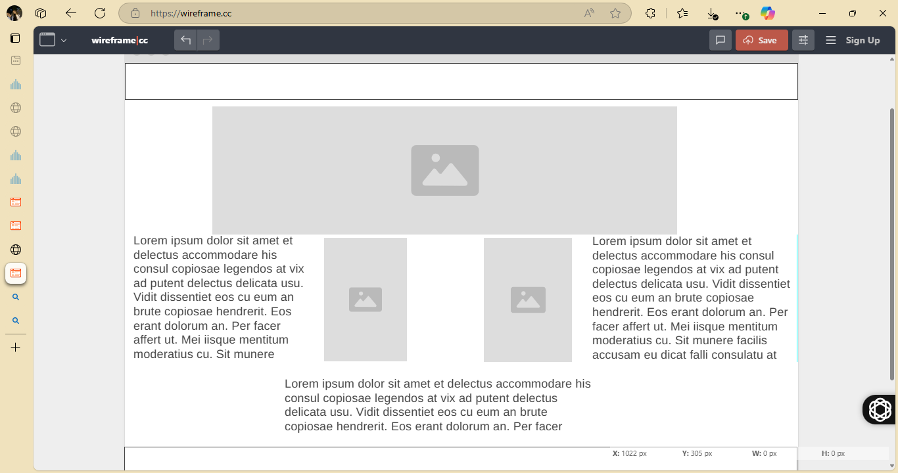
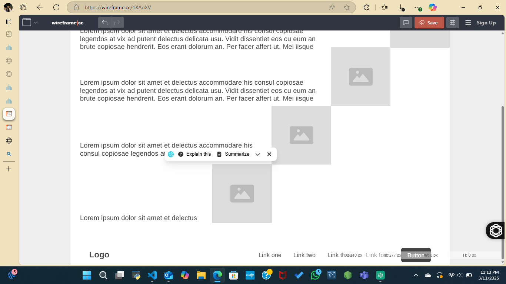

Overview
Purpose
“Beyond The Resume” is designed to showcase who I am beyond traditional job titles and bullet points. It highlights my journey, volunteer work, projects, education, personal stories, unique skills, and future goals, giving a complete picture of my character, values, and passions. This site aims to present me as a well-rounded individual, showing the depth and experiences that make me stand out.
Audience
Intended Audience: Potential employers, mentors, collaborators, and anyone interested in understanding my journey, skills, and aspirations beyond a standard resume.
Branding
Website Logo
Style Guide
Color Palette
| Primary | Secondary | Accent 1 | Accent 2 |
|---|---|---|---|
Typography
Heading Font: Raleway
Paragraph Font: Lora
Welcome to my journey
A resume only tells part of the story... this is where you see the full picture. Beyond the Resume is my personal space to share the experiences, challenges, and passions that have shaped me. From the projects I’ve worked on to the lessons I’ve learned, this site goes deeper than just skills and job titles. Whether you're here to learn more about my journey, connect over shared interests, or see what drives me, I hope you find something that resonates.
Why?
Everyone has a story that goes beyond bullet points on a CV. I believe that who we are—the values we hold, the experiences that shaped us, and the passions that drive us matters just as much as what we do. This site is a reflection of that belief. Here, you’ll find a deeper look at my journey, from the projects I’ve worked on to the moments that have defined my path. It’s a space for authenticity, growth, and connection. So take a look around there’s more to the story than just a resume.
Navigation
Site Map
Content
Home page
Life isn’t just a series of job titles and bullet points it’s a journey full of twists, turns, and growth. Beyond the Resume is my way of sharing the bigger picture: not just where I’ve worked or studied, but the experiences, lessons, and challenges that shaped me. Think of this site as a roadmap, tracing where I’ve been and where I’m headed next. Each step forward builds on the last, like a staircase leading toward new opportunities.
Images for the Home page

My Journey
Every experience whether volunteering, launching a project, or learning a new skill has been a step on my path. This section lays out my journey, showing not just what I’ve done, but how I got there. Imagine a timeline, with each milestone representing a lesson learned or a challenge overcome. Like an open road stretching ahead, my journey is still ongoing, and I’m excited for whatever comes next.
Images for the Page 2
.avif)

Skills & Goals
Beyond just technical skills, I bring creativity, adaptability, and a drive to solve problems. This page highlights what I bring to the table unique abilities, lessons learned, and future ambitions. Like a goal-setting checklist, I’m always working toward new milestones. And like a lightbulb moment, I thrive on innovative thinking and finding creative solutions.
Images for the Page 3
 Wireframes
Create three wireframes for your site. One for each page and list them here
Home
[Any additional details about home that the wireframe does not make clear]
[Page 1]
[Any additional details about page 2 that the wireframe does not make clear]
[Page 2]
[Any additional details about page 3 that the wireframe does not make clear]
